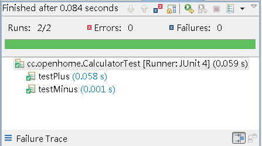

在
撰寫這篇文件的時候，JUnit最新穩定版本是JUnit 4.8，然而這邊仍先介紹JUnit
3.x的使用方式，因為許多既有的測試程式，都是使用JUnit 3.x撰寫，主流IDE也仍支援這個版本，而你在JUnit網站下載的JUnit
4.8版本，也可以用JUnit 3.x的方式運行。
你可以至 JUnit 官方網站 下載JUnit，假設你撰寫了以下程式：
package test.cc.openhome;
import junit.framework.TestCase;
import junit.textui.TestRunner;
import cc.openhome.Calculator;
public class CalculatorTest extends TestCase {
private Calculator calculator;
@Override
protected void setUp() {
calculator = new Calculator();
}
@Override
protected void tearDown() {
calculator = null;
}
public void testPlus() {
int expected = 5;
int result = calculator.plus(3, 2);
assertEquals(expected, result);
}
public void testMinus() {
int expected = 1;
int result = calculator.minus(3, 2);
assertEquals(expected, result);
}
public static void main(String[] args) {
TestRunner.run(CalculatorTest.class);
}
}
使用JUnit 3.x撰寫測試，必須繼承TestCase類
別，這個類別用來集合相關的測試案例，你在當中撰寫testXXX()方法，每個
testXXX()方法中撰寫你所要的單元測試，如果你定義了setUp()、tearDown()方法，則每次單元測試時，會依序執行setUp()、
testXXX()、tearDown()方法，所以你可以在setUp()、tearDown()中準備好測試用的設備
（Fixture）。
assertEquals()方法用來斷言兩個指定值是否相同，這是繼承自
TestCase而來的方法，而TestCase又繼承自Assert類
別。
TestRunner的run()方法若指定測試案例的Class實例，則會自動找出所指定測試案例中
所有testXXX()方法執行測試，預設的TestRunner是文字模式來顯示結果。
假設所測試的Calculator類
別撰寫如下：
package cc.openhome;
public class Calculator {
public int plus(int op1, int op2) {
return op1 + op2;
}
public int minus(int op1, int op2) {
return op1 - op2;
}
}
如果你的專案佈局如下：
|calculator
|src
|cc|openhome|Calculator.java
|test|cc|openhome|CalculatorTest.java
|classes
|lib
|-junit-4.8.2.jar
在文字模式下，你可以如下編譯與執行指令：
C:\workspace\calculator>javac
-sourcepath src -d classes src/cc/openhome/Calculator.java
C:\workspace\calculator>javac
-sourcepath src -cp lib/junit-4.8.2.jar;classes -d classes
src/test/cc/openhome/CalculatorTest.java
C:\workspace\calculator>java
-cp lib/junit-4.8.2.jar;classes test.cc.openhome.CalculatorTest
..
Time:
0.002
OK
(2 tests)
|
最後的OK（2 tests），表示執行了兩個測試並結果無誤。
當然，直接在文字模式下執行JUnit是麻煩了一些，現在主流IDE都可以支援JUnit的撰寫。例如你可以在IDE中加入JUnit的程式庫支援，並撰
寫：
package cc.openhome;
import junit.framework.TestCase;
public class CalculatorTest extends TestCase {
private Calculator calculator;
@Override
protected void setUp() {
calculator = new Calculator();
}
@Override
protected void tearDown() {
calculator = null;
}
public void testPlus() {
int expected = 5;
int result = calculator.plus(3, 2);
assertEquals(expected, result);
}
public void testMinus() {
int expected = 1;
int result = calculator.minus(3, 2);
assertEquals(expected, result);
}
}
在IDE中通常無需撰寫指定TestRunner，如
上撰寫之後，如果是Eclipse，就在原始碼上按右鍵，執行Run As/JUnit
Test（如果沒有加入JUnit程式庫支援，IDE會提示你要加入），IDE會用自己的TestRunner載入
指定的測試案例類別，並找出其中所有的testXXX()方法執
行，以下是Eclipse中的執行結果：

在圖形介面中，綠色代表測試成功，如果測試失敗，則會以紅色表示。
事實上，也可以在文字模式中直接啟動文字模式的TestRunner，無需撰寫main
()指定，例如：
C:\workspace\calculator>java
-cp classes;lib\junit-4.8.2.jar junit.textui.TestRunner
test.cc.openhome.CalculatorTest
..
Time: 0.02
OK (2 tests)
|
直接執行
junit.textui.TestRunner並指定測試案例類別，junit.textui.TestRunner會讀入類別，並使用反射自動找出所
有的testXXX()方法。
|